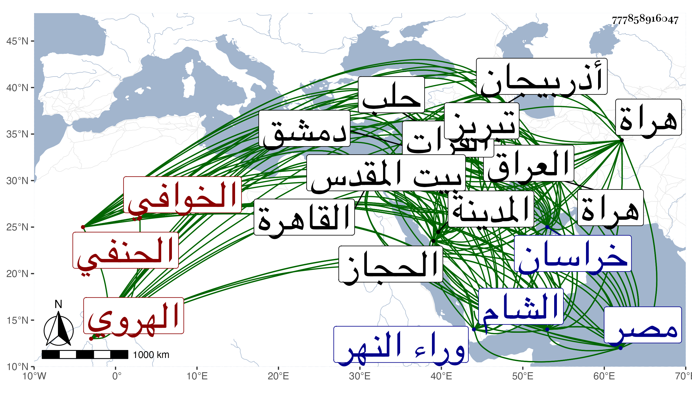

0902Sakhawi.DawLamic.ITO20230111-ara1.EIS1600.777858916047
Biography ID: 777858916047
681
محمد بن محمد بن محمد بن علي أبو بكر الخوافي ثم الهروي الحنفي ويعرف بزين والد إبرهيم وإسمعيل ومحمد المذكورين في محالهم . ولد في أوائل سنة سبع وخمسين وسبعمائة وأخذ كما رأيته بخطه عن الجلالين فضل الله التبريزي وأبي طاهر أحمد الخجندي المدني والزين العراقي قرأ عليه أربعي النووي بالمدينة الشريفة والصدر أبي البركات أحمد بن نصر الله القزويني وابن الجزري وأنهم أجازوه برواياتهم ومؤلفاتهم وأن له شيوخا بما وراء النهر وخراسان والعراق وأذربيجان والشام ومصر والحجاز وكذا رأيت الطاوسي سمى في شيوخه من عيناهم إلا ابن الجزري وقال بعضهم أنه أخذ عن الشريف الجرجاني الرضي بحثا وكان معه خطة بالتبليغات على الكتاب ، وبلغنا أنه قدم القاهرة قديما فاجتمع بالزين عبد الرحمن بن محمد الشبريسي والتمس منه الصحبة وتلقين الذكر فتوقف وقال له أنت إمام في الفنون متقدم في العلوم وأنا فقير درويش ، أو نحو هذا ، وكرر عليه السؤال والإلحاح غير مرة وهو يأبى فقال له الزين فما يكون جوابك إذا وقفت بين يدي الله وقلت له يا رب قد سألت هذا في إرشادي إلى الوصول لك والدلالة عليك فامتنع ، فقال له الشيخ فما يكون جوابك أنت إذا قيل لك ما الذي أردت بتعلم المسئلة الفلانية ومسألة كذا وكذا وسرد له مسائل من فنون مختلفة فخضع الزين وقال من أجل هذا جئتك منسلخا لتسلك بي الطريق المرضية فحينئذ لقنه وأمره بالخلوة فأقام فيها أياما ثم أخرجه وأذن له في الإرشاد والتلقين وسافر الشيخ فبلغ الزين أنه حضر بعض السماعات ولم يكن يرتضي ذلك فغضب منه وراسله يأمره بالتوجه ماشيا لبلاده بقصد التأديب فيما فعل فسافر ثم عاد فوجد الزين قد مات ، ومن شيوخ الزين أيضا الذين صحبهم الشهاب البسطامي والتابابادي وشريفا السكندري ولقي بإسكندرية في ابتدائه الشهاب أحمد الفرنوي فأخذ عنه وصافحه كما صافحه أبو العباس القوصي عن مصافحة الملثم عن معمر الصحابي ، وهذا شيء لا يعتمده النقاد والآفة في تركيبه ممن فوق الخوافي وقد قدم القاهرة أيضا في سنة أربع وعشرين وأجاز في استدعاء ابن شيخنا وقال له شيخنا :
| قدمت لمصر يا زين الخوافي | فوافتها الأماني والعوافي |
| وما سرت القوافل منذ دهر | بمثل سري القوادم بالخوافي |
فأجابه الزين بقوله :
| أيا من فاق أهل العصر فضلا | وعلما في الحديث بالاعتراف |
| تقدس سرك الصافي فأحيا | من الآثار مندرس المطاف |
| سألت الله أن يبقيك حتى | تفيض على القوادم والخوافي |
ومدحه ابن الجزري بما سيأتي في منصور بن الحسن وتلقن منه الذكر بالقاهرة في هذه السنة غير واحد كالأمين الأقصرائي والعز الحنبلي وكذا صحبه في غيرها الجمال المرشدي المكي وجمال بن جلال النيربزي والطاوسي وقال إنه قرأ عليه نظمه الفارسي في آخرين كالسيد الصفي الإيجي وأجاز لابن أخيه العلاء بن السيد عفيف الدين ، وذكره التقي بن فهد في الكنى من معجمه وبيض له . ودخل الشام وحلب وبيت المقدس وغيرها ، وحج وتلمذ له خلائق وصار له صيت وشهرة . قال النقي بن قاضي شهبة : اجتمعت به فرأيته شيخا كبيرا ابن ثمانين سنة وهو ببلاد تيمور وله بالطريق عن بلاده سنة وأربعة أشهر وهو عالم كبير جليل المقدار ذو علوم كثيرة ، وقال العلاء القابوني البخاري أنه سأل عن مسئلة من مشكلات العربية فتكلم فيها أحسن كلام . وقال الجمال يوسف العجمي نزيل دمشق أنه في العلم كالعلاء البخاري ولكنه يميل إلى الدنيا وذكر أن شاه رخ بن تمر قال له حج في البحر أسهل عليك فقال أريد أن أزور بلاد الشام ومن بها من الصالحين والعلماء أحياء وأمواتا فإنه ليس وراء الفرات قبر نبي انتهى . وقوله يميل إلى الدنيا ليس يجيد بل هو بعيد عن ذلك وقد أزال في هذه السفرة ما كان يتوقع من الشر بين إسكندر صاحب تبريز وشاه رخ بن تمر حين دخول الشيخ تبريز في حكاية طويلة فيها له كرامة . وعمر حتى مات في يوم السبت غرة شوال سنة ثمان وثلاثين ورأيت من أرخه في يوم الخميس ثالث رمضان من التي بعدها بهراة في الوباء الحادث بها وأبعد جدا من قال أنه جاء الخبر لدمشق بوفاته في سنة خمسين رحمه لله ونفعنا به .
